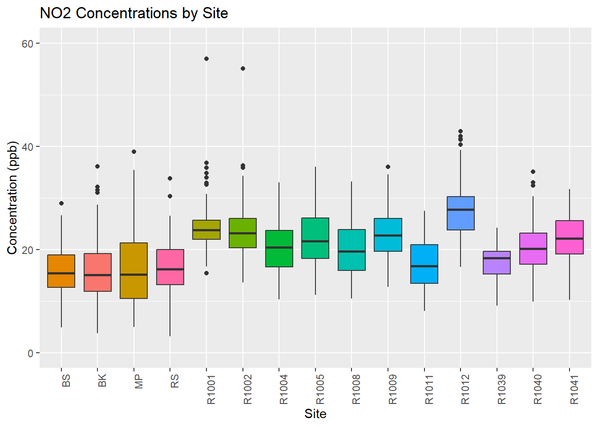
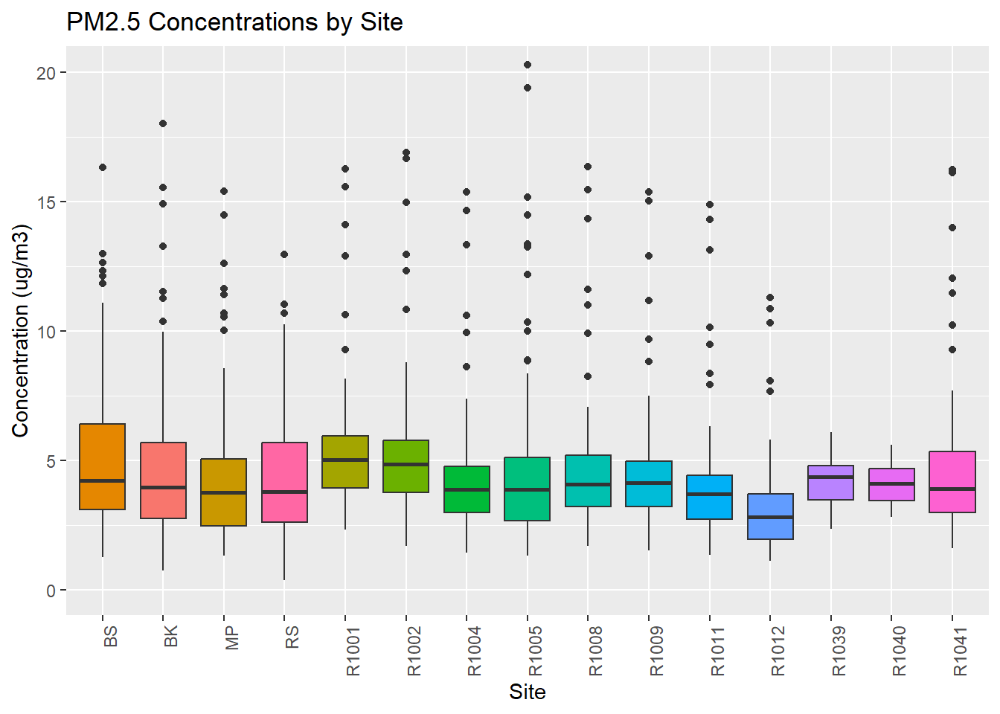
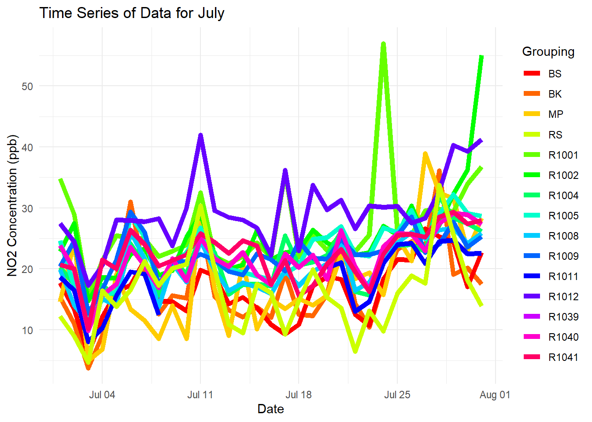

AAAR 2023 Data Wrangling Tutorial
Dr. Naomi Zimmerman
2023-10-02
Introduction
Managing your experimental data is increasingly difficult because of the sheer volume of data that is being collected, the high time resolution of the data, the number of data users, and publishing requirements on making data and codes open and accessible. Taking some time to learn from core data management and data wrangling skills is important!
In this tutorial, we’ll look at the data management and analysis pipeline from data import / upload through to data visualization. We’ll compare a couple of different approaches considering the needs I just outlined. The first data set I am providing is a pre-cleaned data set for simplicity and to show the pipeline from start to finish. If we have time, we’ll look at a more complicated set of data that requires more pre-processing before we can look at it.
There are many coding languages you can use to work with your data. In this tutorial, I am going to use Structured Query Language (SQL) and R. To manage SQL data, I will show an example with MySQL. This is just one database management system, and many of the same principles will apply if you’re using other popular SQL database management systems like SQLite or PostgreSQL. You just need to change the R package you are using to interface with the SQL database management system you are using.
I’ll also briefly demonstrate importing your data directly into R and some common pitfalls / why the SQL approach can be preferable.
Once our data is in R using RStudio, a popular integrated development environment (IDE) for R, we’ll do some quick visualizations, introducing you to a popular collection of R coding packages called the ‘tidyverse’. This shares many principles with the ‘pandas’ software library in Python. So while we will work in R/RStudio today, again, many of the ideas or processes can be replicated in Python (for example using the PyCharm IDE). It’s just a matter of personal preference :)
To manage our R codes and take notes / share interim plots, we’ll be using a markdown file. I’m typing this tutorial right now in an R Markdown file. Very meta. Another popular piece of software for markdown files with embedded R or Python coding is Jupyter Notebooks. We won’t run any Jupyter notebooks, but I will show you briefly what they’re all about.
As we work through our data, we all know that analysis can take time. Or perhaps we want to run a code that might break everything (happens to the best of us!) and we want to make sure we can restore our previous code. Version control is your friend here and it’s so easy to do with Git, which is a distributed version control system that tracks changes in any set of computer files. We’ll use the Github platform as our convenient cloud-based system to execute our Git version control. A nice feature of Github is that we can also easily convert our Markdown files into webpages (which is what you’re reading right now!). So cool, right?
Lastly, if you have a lot of data being collected routinely, it can be cool to show your data. We’ll do a simple example in Grafana, which is an open source analytics and interactive visualization web application.
What we’ll cover today is a lot for a 1 hour 45 minute session - and that’s okay! The goal is that you come out of this tutorial with some ideas, new terminology and an interest in learning more. If you take the time to learn these principles and approaches early on in your program, you’ll have an easier time down the road when you’re trying to address Reviewer 2 comments almost a year after a paper was originally developed, because you left yourself an awesome paper trail. Future you is already thanking you! Now without further ado, let’s get started.
Getting yourself set-up
If you want to follow along in real-time, you’ll need the following tools installed on your machine. Note that I tested this tutorial in the Windows operating system. I can’t make any guarantees it will work 100% smoothly in a macOS or Linux operating system, but there shouldn’t be too many pitfalls with this.
Tools needed:
- MySQL (Click here for YouTube tutorial for installing MySQL on Windows 11)
- R and RStudio (Click here for YouTube tutorial for installing R and RStudio)
- Git and a Github account (Click here for a Github Guide on Installing Git)
- Connect Git to RStudio (Click here for a YouTube tutorial on connecting Git and Github to an RStudio Project)
Other notes:
- This tutorial will require a bunch of R packages to be installed - but don’t worry, I have parts of the code blocks below that will install any R packages you might need that you don’t already have :)
- All the data, codes and markdown files are available in the Github repository (Click here to access)
- If you just want the R Markdown file, you can download it from the upper right corner of the page.
Part 0: Version Control
In developing this tutorial, I used version control using Git and Github. If you’re in academia, Github is great because you can get access to many paid features for free (making pages from private repositories, creating organizations, etc.). You can interact with Git in RStudio very easily after it’s installed (see links from the Introduction). Once you’ve successfully installed Git and made it accessible in RStudio, you’ll see a little “Git” tab in the top right panel. We can use this panel to quickly Commit changes to our repository, view file additions or deletions, etc.
Those who are familiar with Git may prefer to use the command line - that’s outside of the scope of our tutorial today, but you can access the terminal from RStudio in the “Terminal” tab of the bottom left panel.
I will now quickly demonstrate making a change, committing that change, and pushing my change to Github.
Forking the directory
If you want to follow along in real-time with this tutorial, navigate to this tutorial’s repository (Click here to access) and create a fork (which will create a local copy in your own repository).
Part 1: SQL Set-up and Logistics
Before we can start playing with data, we’re going to make sure we have set up and configured MySQL on our machine. We’ll do this part live, so follow along. We can interact with MySQL in a few ways:
- MySQL Workbench: A Graphical User Interface for your SQL data
- The command line
The nice thing about the workbench is that it can help you learn how to write and parse SQL queries, since it will translate your request into the query. So we’ll mostly be using the Workbench to check that our work is being stored correctly, but I will show some quick examples in the command line too later on in the tutorial.
Once we have set up MySQL on our machine, making note of the MySQL user (and their credentials to write new tables etc.), we can start working in R to import our data, write it to SQL, and be off to the races.
A note on how I’m using SQL here: One of the core features of an SQL database is that you can link different scheme (think tables) together with keys. Keys can be used to create a relationship among different database tables or views. This isn’t a tutorial on SQL, so we’re keeping it simple today. But if SQL is something you want to learn, this is a pretty fundamental concept to keep in mind.
Diving into R
What you’re looking at right now is an HTML version of an RMarkdown file that I prepared for this tutorial. A markdown document allows me to combine text, code blocks, and outputs of those codes in one place. If you download the ‘Rmd’ file from the website, you can see what the Markdown document looks like in its raw form. When you’re done editing, you can see the formatted html version by “Knitting”.
(An Aside) Jupyter Notebooks
A very popular alternative to R Markdown documents is Jupyter Notebooks. If Python is your thing, you’ll probably prefer them. You can also add in R to Jupyter notebooks and even toggle between R code blocks and Python code blocks in one place. Let’s take a quick peek at the Jupyter notebooks ecosystem so you can make a mental note to learn more another day.
R Set-up: Libraries and Packages
In this first code block, we’re going to (1) check for the necessary packages to execute the codes in this Markdown document, (2) install those packages if you haven’t already installed them, and (3) load the packages if installed.
I like the ‘pacman’ package to streamline this process, since you can just give it a list of packages within the ‘p_load’ command that will elegantly install any missing packages and then load them.
# Check for pacman and load
if (!require("pacman")) install.packages("pacman"); library(pacman)## Loading required package: pacman# Install / load required packages
p_load(DBI,RODBC,odbc,dbplyr,RMySQL,tidyverse,keyring,con2aqi,lubridate, stringr)R Set-up: SQL Connection
The packages we have loaded (specifically: DBI, RODBC, ODBC and dbplyr) will let us connect to and manipulate an SQL database. Let’s first check to make sure we have the appropriate drivers installed to run these packages successfully, and then connect to our SQL database.
(note, if you don’t have an empty database to work with, we can create one in either the MySQL workbench or in the command line)
mysql -u root -p
CREATE DATABASE livedemo;
You’ll notice in the code block below that I haven’t actually shown you my MySQL password - this is good coding practice. It’s not a good idea to be widely sharing passwords, API keys etc. The best approach here is to store your password as an environment variable. I like the ‘keyring’ package to do this for me. I have previously stored my password and so I can just use the key_get function to load it. Hooray!
# First check that the MySQL driver is listed here before proceeding.
sort(unique(odbcListDrivers()[[1]]))## [1] "Microsoft Access Driver (*.mdb, *.accdb)"
## [2] "Microsoft Access Text Driver (*.txt, *.csv)"
## [3] "Microsoft Excel Driver (*.xls, *.xlsx, *.xlsm, *.xlsb)"
## [4] "MySQL ODBC 8.1 ANSI Driver"
## [5] "MySQL ODBC 8.1 Unicode Driver"
## [6] "SQL Server"# Now connect to our SQL database using the 'dbConnect' function:
sql_conn <- dbConnect(RMySQL::MySQL(),
dbname = "aaar2023tutorial",
Server = "localhost",
port = 3306,
user = "root",
password = key_get("MYSQL_PASSWORD")
)Part 2: Building our SQL Database and Querying it; Example 1
In our first example, we have some pre-cleaned data from a deployment last year in Vancouver, BC. In this deployment, we had 11 multi-pollutant low-cost sensors, and also collected data from 4 regulatory monitoring stations to compare our focus neighborhood to the surrounding region. Let’s load the metadata from this example and show it as a table.
metadata <- read_csv("data/example 1/metadata.csv", show_col_types = FALSE)
knitr::kable(metadata)| Type | Name | ID | latitude | longitude |
|---|---|---|---|---|
| Low-cost sensor | RAMP 1001 | R1001 | 49.2840 | -123.0970 |
| Low-cost sensor | RAMP 1002 | R1002 | 49.2810 | -123.1010 |
| Low-cost sensor | RAMP 1004 | R1004 | 49.2790 | -123.0850 |
| Low-cost sensor | RAMP 1005 | R1005 | 49.2780 | -123.0910 |
| Low-cost sensor | RAMP 1008 | R1008 | 49.2770 | -123.0860 |
| Low-cost sensor | RAMP 1009 | R1009 | 49.2810 | -123.0740 |
| Low-cost sensor | RAMP 1011 | R1011 | 49.2790 | -123.0920 |
| Low-cost sensor | RAMP 1012 | R1012 | 49.2820 | -123.0990 |
| Low-cost sensor | RAMP 1039 | R1039 | 49.2800 | -123.0930 |
| Low-cost sensor | RAMP 1040 | R1040 | 49.2800 | -123.0820 |
| Low-cost sensor | RAMP 1041 | R1041 | 49.2820 | -123.0880 |
| Regulatory Metro Vancouver | Burnaby South | BS | 49.2152 | -122.9857 |
| Regulatory Metro Vancouver | Burnaby Kensington | BK | 49.2792 | -122.9707 |
| Regulatory Metro Vancouver | Richmond South | RS | 49.1414 | -123.1082 |
| Regulatory Metro Vancouver | Mahon Park | MP | 49.3240 | -123.0835 |
For each of these locations, I have provided about 4 months of daily average concentrations of NO2, PM2.5, and O3. I want to first create some SQL tables to store this data, load the data into those tables, and then use the SQL query format to start making some analyses and figures.
Load the data and create the tables
Note I have put in a flag here of 0 or 1 if this is your first time executing the script. If you’re running it for the first time, set initial_run to “1”, otherwise set it to “0” to skip to the next steps. SQL will throw an error if you try and create a new table that already exists.
We also need to set some permissions on the R and MySQL side of things to make sure we can write from these local files. For these permissions in R, this is embedded in the code. For the MySQL side, you will need to edit the “my.ini” configuration file using Notepad or other text editor and add the statement “local_infile=1” under the [client], [mysql], and [mysqld] sections of the file and save it. I’ll show you this now.
initial_run=0
if(initial_run==1){
## This should only be run once.
# Load our data
NO2_daily <- read_csv("data/example 1/NO2_daily.csv", col_types = cols(date = col_date(format = "%m/%d/%Y")), show_col_types = FALSE)
O3_daily <- read_csv("data/example 1/O3_daily.csv", col_types = cols(date = col_date(format = "%m/%d/%Y")), show_col_types = FALSE)
PM_daily <- read_csv("data/example 1/PM_daily.csv", col_types = cols(date = col_date(format = "%m/%d/%Y")), show_col_types = FALSE)
# So that we can permit writing to SQL from R!
dbSendQuery(sql_conn, "SET GLOBAL local_infile = true;")
# create tables in your SQL database
dbCreateTable(sql_conn,name="no2_daily", fields=NO2_daily)
dbCreateTable(sql_conn,name="o3_daily", fields=O3_daily)
dbCreateTable(sql_conn,name="pm_daily", fields=PM_daily)
# write our data to the SQL database
dbWriteTable(sql_conn,"no2_daily",NO2_daily,append=TRUE, row.names=FALSE)
dbWriteTable(sql_conn,"o3_daily",O3_daily,append=TRUE, row.names=FALSE)
dbWriteTable(sql_conn,"pm_daily",PM_daily,append=TRUE, row.names=FALSE)
# RMySQL has some quirks where it really fights pushing the data in a correct datetime format, so we manually send a query to SQL to make sure it's formatted correctly!
dbSendQuery(sql_conn,"ALTER TABLE no2_daily MODIFY date datetime;")
dbSendQuery(sql_conn,"ALTER TABLE o3_daily MODIFY date datetime;")
dbSendQuery(sql_conn,"ALTER TABLE pm_daily MODIFY date datetime;")
}Interacting with the data
Imagine now that you are perhaps a secondary user of the data - maybe this is from a big field campaign and different people will be slicing and dicing the data in different ways. This is where having your data in an SQL database can be super helpful.
You can have a select group of folks maintaining the SQL database (or even better log directly into an SQL server, but that’s a story for another day), and then create a new user who only has permission to SELECT data from the SQL database but not actually modify it.
That keeps your original data safe and sound! Also it’s computationally more efficient to just pull in the data you need.
So let’s look at how we can do this in R. To do this, we’re going to take advantage of the ‘dbplyr’ package, which lets you use typically ‘tidyverse’ style commands to interact with databases. Once you’ve finished your tweaks, the `dbplyr’ package will just make 1 singular call to the database, and it also has the functionality to show you your query so you can learn the SQL equivalent at the same time. Win-win!!
I will show you three different ways of playing with some of this data:
Pulling all the pollutant data into one data.table in R for a specified week at the Mahon Park site and calculating a pseudo-AQI (my time averaging is wrong for true AQI, but this is a fictional example). There is a little package called con2aqi that converts concentrations to AQI that we will use here.
Box plots across all our sites for each pollutant
A time series of all our sites for NO2.
These are just some simple examples, obviously everyone’s data questions are unique, this is just to provide some inspiration.
# Data processing 1: Let's say we are interested in calculating the AQI for the week of May 15 - 21, 2022 at the Mahon Park site (MP)
no2_db = tbl(sql_conn,"no2_daily") %>% select(date,MP) %>% filter(between(date, as.Date('2022-05-15'), as.Date('2022-05-21'))) %>% show_query() %>% collect() %>% rename(NO2_MP = MP)## <SQL>
## SELECT `date`, `MP`
## FROM `no2_daily`
## WHERE (`date` BETWEEN CAST('2022-05-15' AS DATE) AND CAST('2022-05-21' AS DATE))o3_db = tbl(sql_conn,"o3_daily") %>% select(date,MP) %>% filter(between(date, as.Date('2022-05-15'), as.Date('2022-05-21'))) %>% show_query() %>% collect() %>% rename(O3_MP = MP)## <SQL>
## SELECT `date`, `MP`
## FROM `o3_daily`
## WHERE (`date` BETWEEN CAST('2022-05-15' AS DATE) AND CAST('2022-05-21' AS DATE))pm_db = tbl(sql_conn,"pm_daily") %>% select(date,MP) %>% filter(between(date, as.Date('2022-05-15'), as.Date('2022-05-21'))) %>% show_query() %>% collect() %>% rename(PM_MP = MP)## <SQL>
## SELECT `date`, `MP`
## FROM `pm_daily`
## WHERE (`date` BETWEEN CAST('2022-05-15' AS DATE) AND CAST('2022-05-21' AS DATE))#let's put it together into one dataframe for our local analysis
aqi <- left_join(no2_db, o3_db, by='date') %>% left_join(., pm_db, by='date') %>% rowwise() %>%
mutate(aqi = max(con2aqi("pm25",PM_MP),con2aqi("o3",O3_MP/1000,"8h"),con2aqi("no2",NO2_MP)))
knitr::kable(aqi)| date | NO2_MP | O3_MP | PM_MP | aqi |
|---|---|---|---|---|
| 2022-05-15 00:00:00 | 17.36167 | 23.96840 | 3.784572 | 23 |
| 2022-05-16 00:00:00 | 18.65333 | 39.14375 | 4.175584 | 37 |
| 2022-05-17 00:00:00 | 7.83000 | 35.28208 | 4.057679 | 33 |
| 2022-05-18 00:00:00 | 8.46000 | 36.90521 | 2.723355 | 35 |
| 2022-05-19 00:00:00 | 16.86000 | 31.18792 | 2.832343 | 29 |
| 2022-05-20 00:00:00 | 15.44333 | 27.66354 | 4.070064 | 26 |
| 2022-05-21 00:00:00 | 23.57333 | 27.47411 | 5.322663 | 26 |
##################
# Data processing 2: Make box plots of the NO2, O3 and PM2.5 daily average concentrations across all the sites.
no2_tidy = tbl(sql_conn,"no2_daily") %>% select(-date) %>% collect() %>% pivot_longer(everything(),names_to = "site", values_to = "concentration")
# Create a custom order for the 'site' variable
site_order <- c("BS", "BK", "MP","RS","R1001","R1002","R1004","R1005","R1008","R1009","R1011","R1012","R1039","R1040","R1041")
# Generate the boxplot in ggplot2
no2_plot <- ggplot(no2_tidy, aes(x = factor(site, levels = site_order), y = concentration, fill=site)) +
geom_boxplot() +
labs(title = "NO2 Concentrations by Site",
x = "Site",
y = "Concentration (ppb)") +
theme(axis.text.x = element_text(angle = 90, hjust = 1), legend.position="none") +
scale_fill_discrete() +
coord_cartesian(ylim = c(0,60))
no2_plot
# Repeat for O3
o3_tidy = tbl(sql_conn,"o3_daily") %>% select(-date) %>% collect() %>% pivot_longer(everything(),names_to = "site", values_to = "concentration")
o3_plot <- ggplot(o3_tidy, aes(x = factor(site, levels = site_order), y = concentration, fill=site)) +
geom_boxplot() +
labs(title = "O3 Concentrations by Site",
x = "Site",
y = "Concentration (ppb)") +
theme(axis.text.x = element_text(angle = 90, hjust = 1), legend.position="none") +
scale_fill_discrete() +
coord_cartesian(ylim = c(0,60))
o3_plot
# Repeat for PM2.5
pm_tidy = tbl(sql_conn,"pm_daily") %>% select(-date) %>% collect() %>% pivot_longer(everything(),names_to = "site", values_to = "concentration")
pm_plot <- ggplot(pm_tidy, aes(x = factor(site, levels = site_order), y = concentration, fill=site)) +
geom_boxplot() +
labs(title = "PM2.5 Concentrations by Site",
x = "Site",
y = "Concentration (ug/m3)") +
theme(axis.text.x = element_text(angle = 90, hjust = 1), legend.position="none") +
scale_fill_discrete() +
coord_cartesian(ylim = c(0,20))
pm_plot
# Date Processing 3: Now let's make a time series for the month of July 2022 for NO2 at all of our sites.
no2_july = tbl(sql_conn,"no2_daily") %>% filter(month(date)==7) %>% show_query() %>% collect() %>% pivot_longer(cols=c(2:16),names_to = "site", values_to = "concentration")## <SQL>
## SELECT *
## FROM `no2_daily`
## WHERE (EXTRACT(month FROM `date`) = 7.0)no2_july$Grouping <- as.factor(no2_july$site)
ggplot(no2_july, aes(x=ymd_hms(date), y=concentration, color=Grouping)) +
geom_line(size=2, na.rm=TRUE) +
labs(title = "Time Series of Data for July",
x = "Date",
y = "NO2 Concentration (ppb)") +
scale_color_manual(values = rainbow(15), breaks = site_order) +
theme_minimal()
Part 3: Dashboards and plotting in Grafana
Some of the figures we just generated are fine, or might be useful for a publication, but say we are routinely collecting and downloading data and we want to track our data as it is coming in (maybe we are routinely collecting data and want a quick / dynamic way to visualize). We can leverage our same SQL databases into the open-source Grafana dashboarding tool. Let’s check it out!
Create a read-only user in MySQL to interface with Grafana
There’s no reason Grafana needs to be able to write new data, it’s just visualizing what we already collected, so let’s make a restricted version.
CREATE USER ‘grafana-demo’@‘localhost’ IDENTIFIED BY ‘aaartutorial’;
SELECT User from mysql.user;
GRANT SELECT ON database_name.table_name TO ‘username’@‘localhost’;
FLUSH PRIVILEGES;
Now let’s hop on over to Grafana and see what we can do. In general this will consist of:
- Connecting to our MySQL data source (just a one time thing)
- Creating new panels for our dashboard either using SQL Query or with their interactive code builder.
Part 4: Some messier data
Now let’s imagine we have some data as it is outputted directly from an instrument. Let’s go with a WCPC for example. In our example 2 data folder, we have 5 separate csv files from 5 different days, and the data doesn’t start cleanly. Let’s process this to concatenate the files and extract the relevant stuff!
Load the data and choose column names we like
# First get the names of all the files in our WCPC raw folder:
file_names <- list.files(path = "data/example 2/WCPC raw/", pattern = "*.csv", full.names = TRUE)
# Use lapply to read and concatenate the data
data_list <- lapply(file_names, function(file) {
read.csv(file, skip = 16)
})
# Combine the list of data frames into one data frame using bind_rows
concatenated_cpc <- bind_rows(data_list)
# Give the columns nicer names
new_names <- c("datetime", "elapsed", "concentration", "counts", "error_code")
names(concatenated_cpc) <- new_names
#Clean up any blank rows lingering around from the csv:
concatenated_cpc <- concatenated_cpc %>%
filter(datetime != "" & !is.na(datetime))
knitr::kable(head(concatenated_cpc))| datetime | elapsed | concentration | counts | error_code |
|---|---|---|---|---|
| 2023-09-13 0:00:00 | 116245 | 4043.41 | 20570 | NA |
| 2023-09-13 0:00:01 | 116246 | 4087.23 | 20790 | NA |
| 2023-09-13 0:00:02 | 116247 | 4137.68 | 21043 | NA |
| 2023-09-13 0:00:03 | 116248 | 3999.69 | 20350 | NA |
| 2023-09-13 0:00:04 | 116249 | 4133.54 | 21022 | NA |
| 2023-09-13 0:00:05 | 116250 | 4269.59 | 21705 | NA |
Create our SQL Table and Push Data
Now that we are generally happy with the format of the data, let’s ship it out to our SQL database and then get it into Grafana. Recall this will involve a few steps:
- If it doesn’t already exist, make an empty table in your SQL database.
- Write the data to our new empty table.
- Force our datetime column to have the right format with ‘sendQuery’.
- Make our dashboard in Grafana!
#### FIRST TIME RUNNING
initial_run_ex2=0
if(initial_run_ex2==1){
# Remember you should only create the table once!
dbCreateTable(sql_conn,name="wcpc", fields=concatenated_cpc)
# Write our data to the SQL database
dbWriteTable(sql_conn,"wcpc",concatenated_cpc,append=TRUE, row.names=FALSE)
# Clean up datetime
dbSendQuery(sql_conn,"ALTER TABLE wcpc MODIFY datetime datetime;")
}Dealing with new files showing up in our directory
Maybe now we want to run this again to check for new files and append them… this is easier if we delete original files once they are loaded into our SQL database, but let’s say we want to triple ensure we have our data and want to maintain our file structure.
This code block uses a stored text file `loaded_cpc_files.txt’ as a tracker of what has been loaded to our SQL database. When a new file name is detected, it will append that file and update the loaded_cpc_file.txt document. We can then see that this change has occurred on Grafana.
# Specify the path to the subdirectory containing the CSV files
subdirectory_path <- "data/example 2/WCPC raw" # Update with the actual path
# Specify the path to the text file for storing file information
info_file <- "loaded_cpc_files.txt"
# Function to read file information from the text file
read_file_info <- function(filename) {
if (file.exists(filename)) {
readLines(filename)
} else {
character(0)
}
}
# Read the list of files currently in the directory
current_files <- list.files(path = subdirectory_path, pattern = "*.csv", full.names = TRUE)
# Read the list of files previously stored in the text file
previous_files <- read_file_info(info_file)
# Find the new files that are not in the list of previously stored files
new_files <- setdiff(current_files, previous_files)
# Read and append the data from new files
if (length(new_files) > 0) {
new_data_list <- lapply(new_files, function(file) {
read.csv(file, skip = 16)
})
new_data <- bind_rows(new_data_list)
# Create an empty data frame to store the concatenated data
concatenated_cpc <- data.frame()
# Append the new data to the concatenated_data data frame
concatenated_cpc <- bind_rows(concatenated_cpc, new_data)
# Give the columns nicer names
new_names <- c("datetime", "elapsed", "concentration", "counts", "error_code")
names(concatenated_cpc) <- new_names
#Clean up any blank rows lingering around from the csv:
concatenated_cpc <- concatenated_cpc %>%
filter(datetime != "" & !is.na(datetime))
# Append the new file names to the text file
merged_files <- c(previous_files, new_files)
writeLines(merged_files, info_file, sep="\n")
# Write our data to the SQL database
dbWriteTable(sql_conn,"wcpc",concatenated_cpc,append=TRUE, row.names=FALSE)
# Clean up datetime
dbSendQuery(sql_conn,"ALTER TABLE wcpc MODIFY datetime datetime;")
# Optionally, you can print a message indicating new data has been added
cat("New data added from:", new_files, "\n")
}That’s it! Thanks for following along in today’s tutorial! If you have any questions, feel free to reach out via email at nzimmerman@mech.ubc.ca
P.S. curious how I made this website? Super simple. You just need to name your output html file “index.html” and have a YAML file called “_site.yml” that describes your navigation bar. Then on GitHub, go to Settings –> Pages and you can render your markdown as a GitHub.io page. Ta-da!